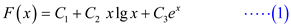
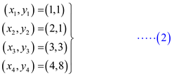
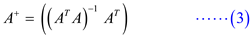
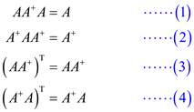
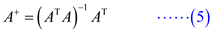
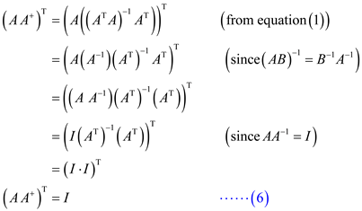
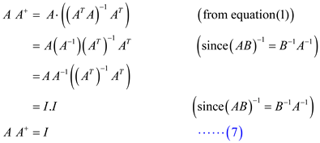
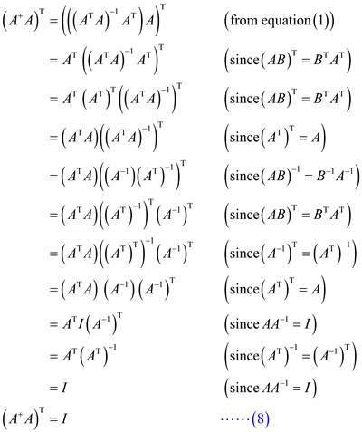

Consider a set of unit vectors.
Where, and so on.
That is for every  all vectors
value are zeros, expect for
all vectors
value are zeros, expect for  row which is
1.
row which is
1.
Symmetric Positive Definite Matrix: If a  symmetric
matrix
symmetric
matrix  satisfy the
condition for all
non-zero column vectors
satisfy the
condition for all
non-zero column vectors  of
of
 real numbers, then the matrix is said to
be a symmetric positive definite matrix.
real numbers, then the matrix is said to
be a symmetric positive definite matrix.
Consider the symmetric positive definite matrix A as follows:
The condition holds for
all  .
.
Now suppose for any value in
diagonal of matrix A is not positive, that is .
Choose from the
set X and calculate.
That is . So, will be negative.
This is a contradiction to the initial consideration; A is a symmetric positive definite matrix.
Therefore, if A is a symmetric
positiv e definite matrix then the value of
,  .
That is all the diagonal elements of the symmetric positive
definite matrix are positive.
.
That is all the diagonal elements of the symmetric positive
definite matrix are positive.
The matrix is which is symmetric positive definite matrix. Its determinant is positive by “completing the square”. It can be proved as follows:
Let x = -by/a and A is positive definite so,
=
The determinant of the above equation is given as:
Here, b = 2by, a = a, c =
So, substituting the values of a, b and c in D it can be deduced that:
Ignoring the constant value that is 4, the expression becomes:
=
=
Thus, so, it means that >0 because a>0
A symmetric positive-definite matrix:
Let A is the  matrix
which is real in nature and can be positive-definite for a non-zero
vector, if:
matrix
which is real in nature and can be positive-definite for a non-zero
vector, if:
A symmetric positive-definite matrix has following properties:
• All the Eigenvalues of A will be positive.
• The largest element of the matrix is always there on the diagonal.
• All the diagonal elements of A will be positive.
• Matrix A will be a nonsingular matrix.
Consider the symmetric positive-definite matrix A as:
To prove that the maximum element lies on the diagonal, apply the same permutation to the both rows and columns of matrix A, the resultant matrix will continue to be symmetric and positive-definite.
The SYLVESTER’S CRITERION states that: A symmetric
matrix
A is positive-definite if and only if:
…… (1)
Where, A is the matrix formed by the intersection of the first k rows and columns of A and in a symmetric matrix .
If there is any element at position, it will
also there at the position of. Thus,
every element which is not at a diagonal, it will also appear at
another position of the matrix. Further, for , applying
the suitable permutation, SYLVESTER’S CRITERION gives:
, applying
the suitable permutation, SYLVESTER’S CRITERION gives:
…… (2)
Now, consider the positive-definite matrix given below:
In symmetric, real, positive-definite matrix, there is always large multiplier with a positive-definite matrix.
• In the above matrix, large multiplier is 10001. Due to this multiplier, the determinant of the matrix becomes positive.
• Knowing this, large multipliers will not try to create unstable conditions unless they lead to growth of the transformed element, because the length of matrix continuously increases.
• And to make the determinant positive, the diagonal elements products have to be made larger than the non-diagonal terms, which are used in the corresponding calculation.
• Further, as all the reduced matricesare positive-definite, their maximum element will lie on the diagonal (consider the above determinant equation), which is one of their properties stated above.
• Also from equation (2) either one of the element that is
or
should be greater than  to hold the
inequality of equation (1). Hence the max element should lie in the
diagonal.
to hold the
inequality of equation (1). Hence the max element should lie in the
diagonal.
A symmetric positive-definite matrix:
A matrix
A, which is real in nature, can be positive-definite for a
non-zero vector, if:
… … (1)
A symmetric positive-definite matrix has following properties:
a. All the Eigen values of A will be positive.
b. The largest element of the matrix is always there on the diagonal.
c. All the diagonal elements of A will be positive.
d. A will be a nonsingular matrix.
Consider a symmetric positive-definite matrix A as:
To prove that determinant of each leading sub-matrix of a
symmetric positive matrix is positive, suppose that be any
leading sub-matrix of a symmetric positive-definite matrix .
.
After removing corresponding rows and columns of the symmetric
matrix, the
sub-matrix is also
going to be symmetric in nature.
So, is a symmetric matrix. … … (a)
Now, consider that  be a
particular column inside this sub-matrix, having
p entries, which are non-zero in nature.
be a
particular column inside this sub-matrix, having
p entries, which are non-zero in nature.
Increase to make it
into an n-vector  by inserting
zeros into the places corresponding to the particular rows
ofwhich were
previously removed in the form. Then
is
not the zero vector and a relation is derive.
by inserting
zeros into the places corresponding to the particular rows
ofwhich were
previously removed in the form. Then
is
not the zero vector and a relation is derive.
So, is a
non-zero vector. … … (b)
Now combining the statement (a) and (b) and also putting it in equation (1),
This is a sufficient and necessary condition for leading sub-matrixes in a symmetric definite matrix to be positive.
Hence, the determinant of each leading sub-matrix of a symmetric positive-definite matrix is positive.
Consider the following function:

Calculate the function of the form such that,
it is the best least-square fit to the data points .
.
Consider,

Construct the matrix of values of the basis functions at the points
as follows:
Substitute the point values from (1) in the above matrix A.
Calculate the pseudoinverse of the matrix A using the formula,
.
Calculate .
Calculate .
The normal equation is given by the equation, . Solve it for C.
Hence, the constants of the function (1) are as follows:
Substitute the values of C in (1) to get the required function.
Therefore, the function that is best least-square fit to the data points and is .
The following four equations are satisfied by the pseudoinverse
of
the matrix .

Pseudoinverse of the
matrix is given by
the following equation:

Show that pseudoinverse satisfies the equation (1).
Therefore, pseudoinverse satisfies the equation .
Show that pseudoinverse satisfies the equation (2).
Show that pseudoinverse satisfies the equation (3).
Consider left hand side of equation (3).

Consider right hand side of equation (3).

From equations (6) and (7)
Consider left hand side of equation (4).

Consider right hand side of equation (4).
From equations (8) and (9)